Documentation pédagogique et exhaustive : formulaire d'adhésion, espace « Mes inscriptions » et interface secrétariat « Demandes d'adhésion ».
Team Up propose un parcours d'adhésion au club SQY Ping en ligne, aligné sur le formulaire papier historique, avec calcul de tarif en temps réel et traitement par le secrétariat.
Le dispositif repose sur trois écrans principaux :
/club/inscription) — assistant en plusieurs étapes, utilisable sans compte jusqu'à l'envoi./club/mes-inscriptions) — suivi des dossiers envoyés par l'utilisateur connecté./club/demandes-adhesion) — relecture, correction et demande de paiement par le secrétariat.| Écran | URL | Rôles autorisés |
|---|---|---|
| Inscription club | /club/inscription | Public (anonyme jusqu'à l'envoi) |
| Mes inscriptions | /club/mes-inscriptions | Joueur, Coach, Secrétaire, Admin |
| Demandes d'adhésion | /club/demandes-adhesion | Secrétaire, Admin |
L'assistant « Préparez votre dossier » comporte 6 étapes pour un majeur ou 7 étapes pour un mineur (ajout des représentants légaux). Une barre de progression et un stepper permettent de naviguer vers les étapes déjà validées.
| # | Étape | Contenu principal |
|---|---|---|
| 1 | Pour qui ? | Type d'inscription, licence, date de naissance |
| 2 | L'adhérent | Identité, contact, adresse (BAN) |
| 3* | Représentants | 1 ou 2 représentants légaux (mineur uniquement) |
| 3/4 | Pratique | Section, créneaux, option compétiteur |
| 4/5 | Dossier | Médical, famille, aides, attestation |
| 5/6 | Engagements | Image, autorisations mineur, règlement |
| 6/7 | Récap | Vérification, tarif, envoi |
Navigation Retour libre ; étapes suivantes accessibles seulement si les étapes intermédiaires sont valides. Les erreurs scrollent vers le premier champ concerné.
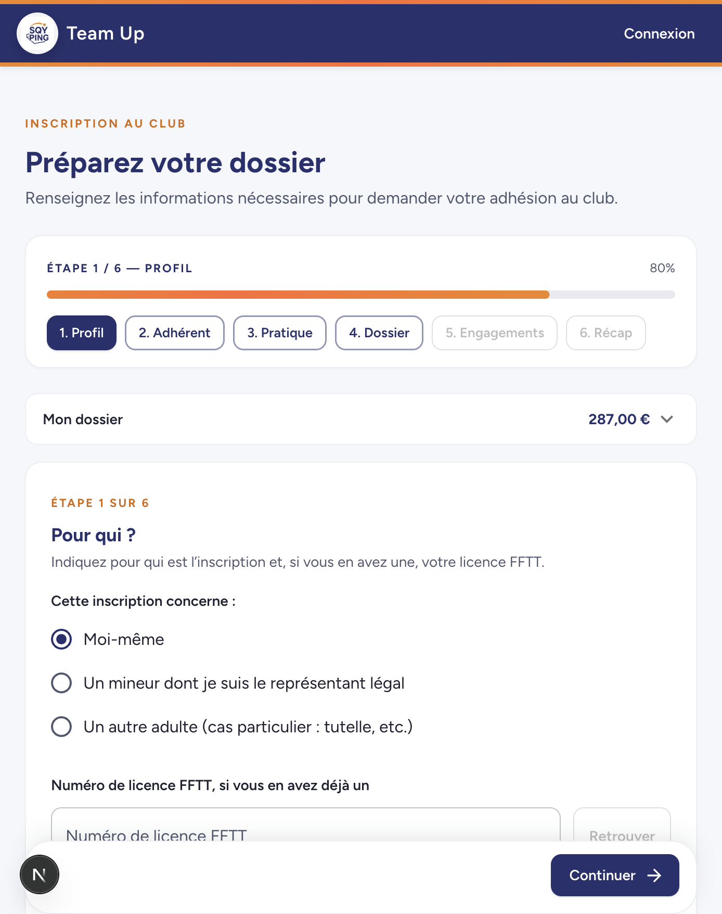
Saisie du numéro de licence puis bouton Retrouver : appel API /api/club/registration/license-lookup pour préremplir identité (prénom, nom, sexe, date de naissance) sans exposer de données sensibles inutiles.
Détermine l'âge, l'affichage conditionnel (mineur / majeur), le tarif et les règles médicales. Si un mineur est détecté avec le profil « Moi-même », un message demande de changer de profil.
Identité (prénom, nom, sexe, ville de naissance), contact (e-mail, téléphones au format français) et adresse postale via la Base Adresse Nationale ou saisie manuelle.
Pour les femmes : case Première inscription féminine au club SQY Ping (réduction tarifaire −80 € sur l'adhésion).
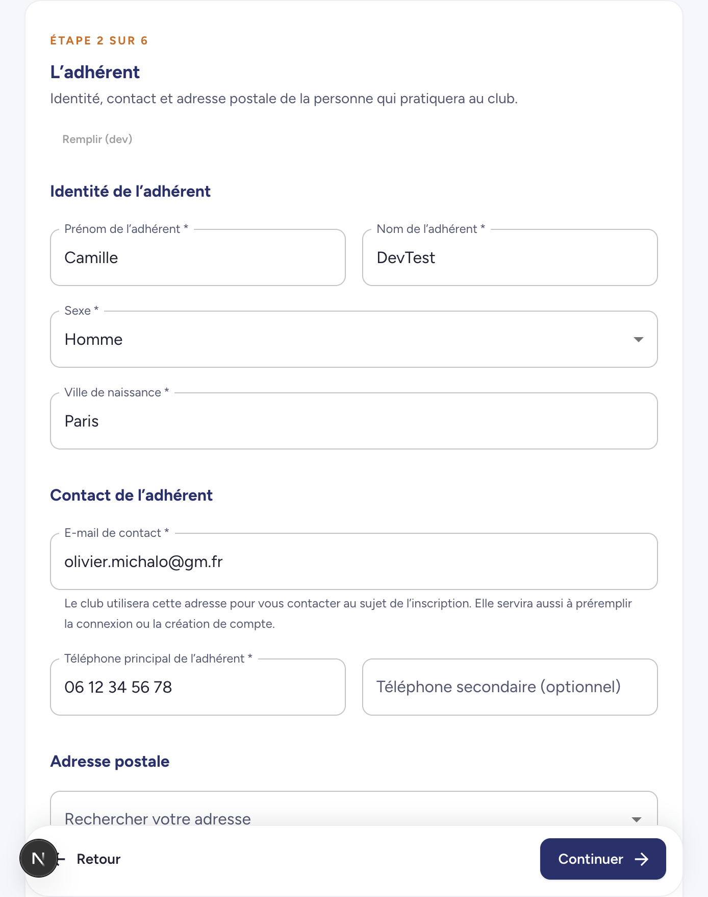
Affichée uniquement si l'inscription concerne un mineur. Un représentant est obligatoire, un second est facultatif (e-mails distincts).
Champs : lien (mère, père, tuteur, autre), prénom, nom, e-mail, téléphone. L'e-mail du compte connecté peut être proposé en préremplissage non destructif.
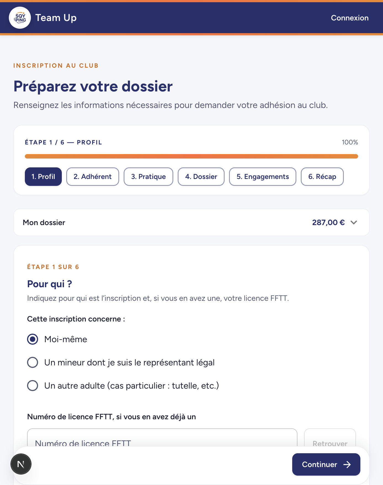
Interrupteur « section compétiteur » : taille de maillot, choix des compétitions (jeunes, critérium seniors, championnat par équipes, Paris, handisport) avec montants indicatifs.
Si la section principale est handisport : niveau loisir ou compétition requis pour le tarif.
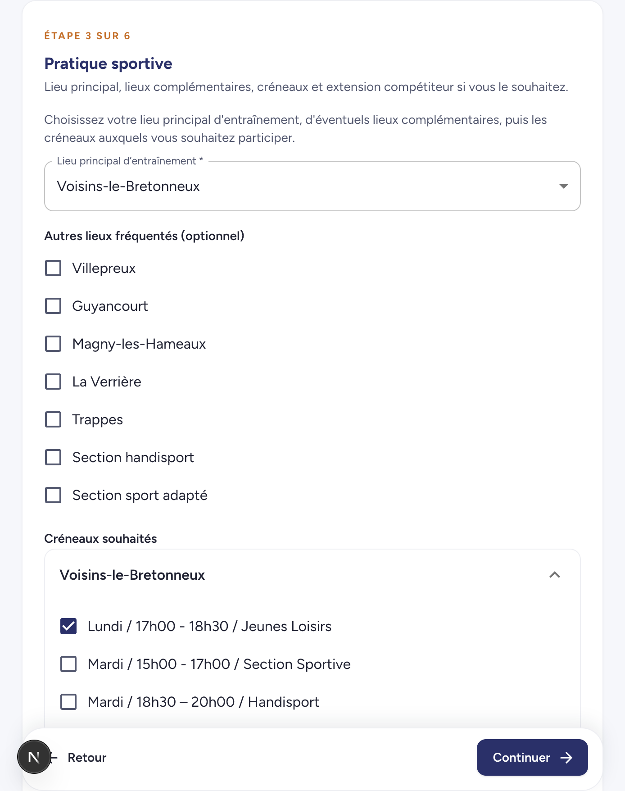
Logique progressive selon l'âge et l'historique FFTT :
Première, deuxième ou troisième inscription et plus dans la même famille — réductions sur l'adhésion club.
Pass Sport (code 10 caractères), Pass Plus, Labaz, aide municipale — affichées comme en attente de validation dans le devis (non déduites automatiquement).
Demande optionnelle d'attestation pour tiers (employeur, CAF, etc.).
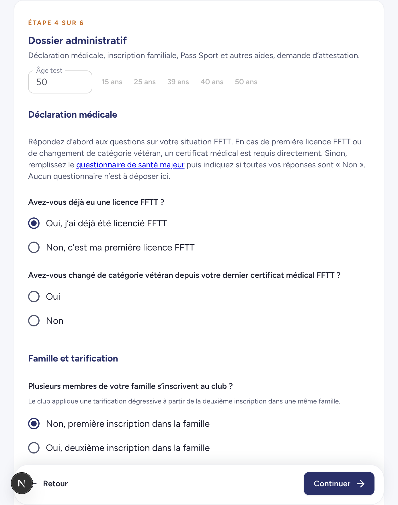
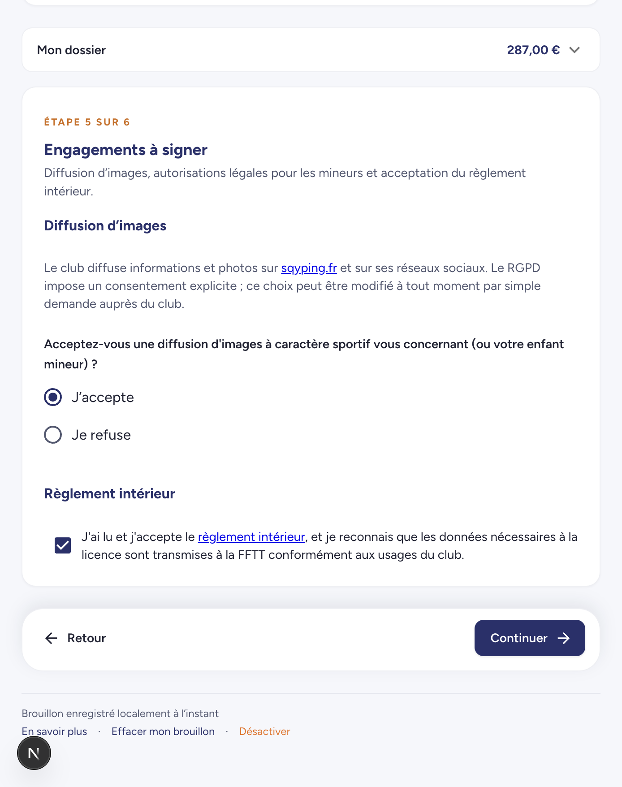
Résumé par bloc avec boutons Modifier renvoyant à l'étape concernée. Tarif estimé et rappel des contacts.
Envoi : si non connecté, bouton Se connecter pour envoyer ouvre la boîte de dialogue d'authentification (connexion ou création) sans quitter la page ; le dossier est alors soumis via POST /api/club/registration.
Après succès : redirection vers Mes inscriptions avec message de confirmation (?created=<id>).
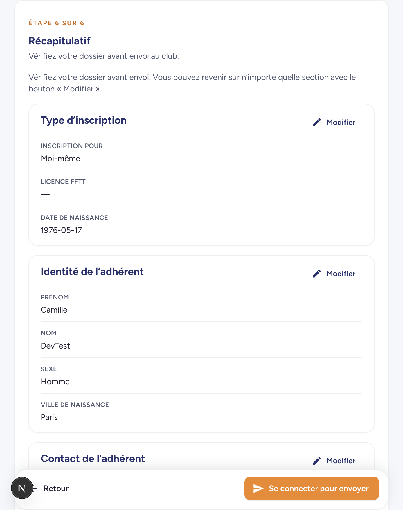
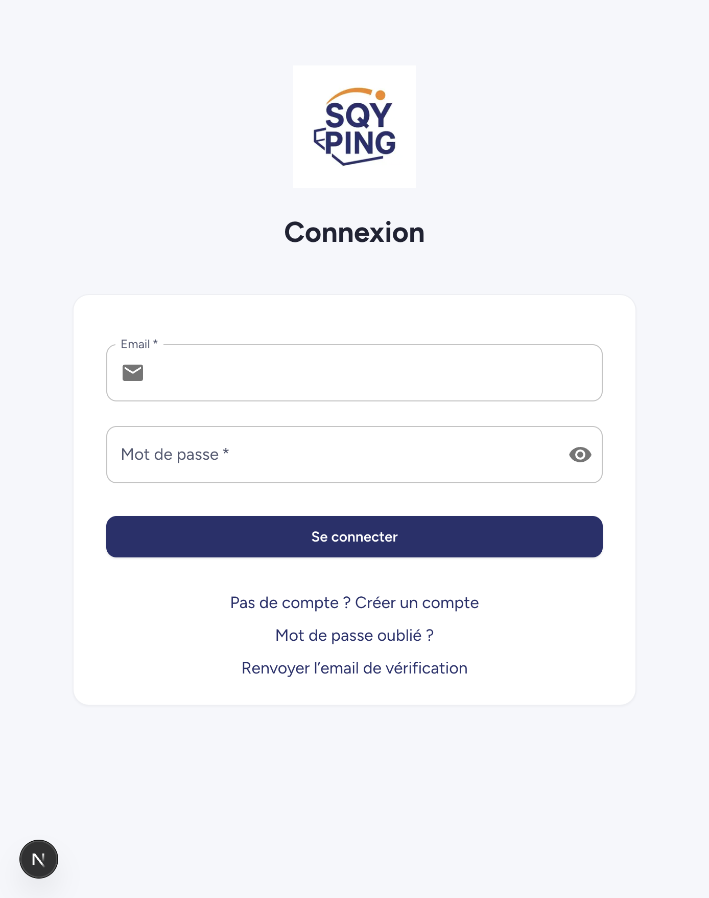
Le bandeau Mon dossier — XX,XX € (mobile : accordéon) affiche en temps réel :
Le calcul repose sur la grille publique SQY Ping 2025 (lib/pricing), recalculée à chaque modification du brouillon.
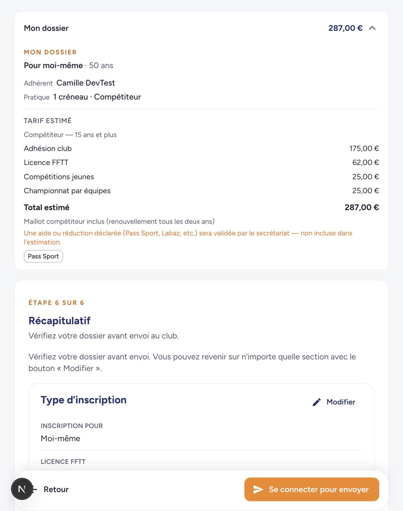
Le formulaire enregistre automatiquement un brouillon dans le localStorage du navigateur (transparence RGPD via bandeau « En savoir plus » : effacer, désactiver).
Avantages : reprise après fermeture de l'onglet sans compte. Limites : brouillon lié au navigateur / appareil ; pas de synchronisation cloud tant que le dossier n'est pas envoyé.
Espace personnel listant tous les dossiers envoyés avec le compte connecté (soumetteur).
GET .../invoice).?created=), succès paiement (?payment=success®istration=).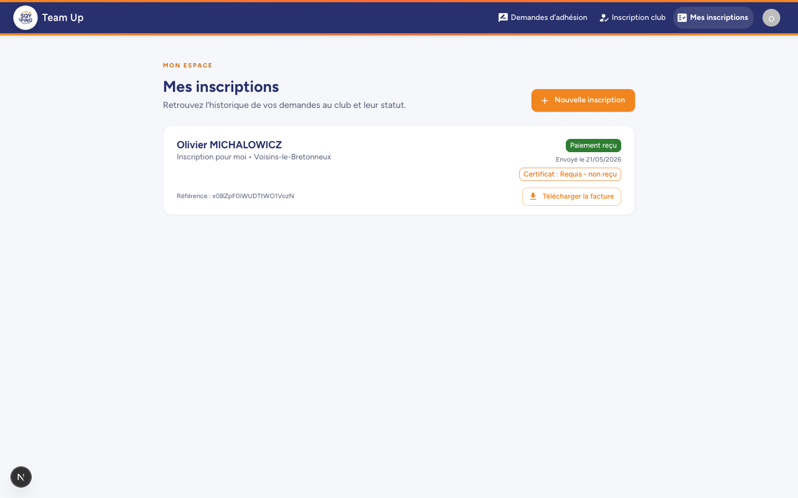
Interface de relecture et traitement réservée aux rôles Secrétaire et Admin.
Cartes cliquables : nom, e-mail du compte soumetteur, date, statut, montant, suivi certificat. Bouton Actualiser.
Formulaire éditable reprenant l'intégralité du dossier par sections : identité, contact, représentants, sections/créneaux, administratif, engagements, compétition, tarification, paiement.
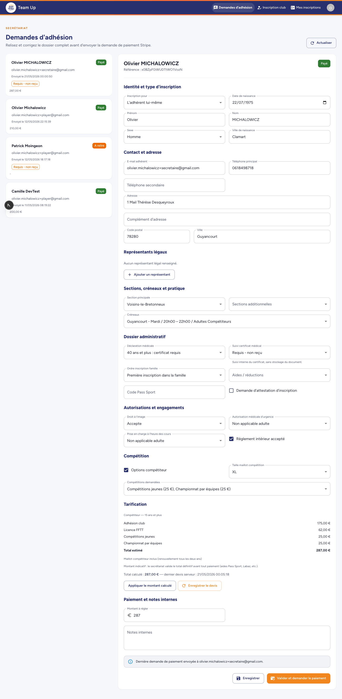
/api/stripe/webhook).| Statut | Signification côté demandeur | Secrétariat |
|---|---|---|
| submitted | En cours d'examen | A relire |
| in_review | En cours de relecture | En relecture |
| payment_requested | Paiement demandé (+ montant) | Paiement demandé |
| paid | Paiement reçu | Payé |
| approved | Approuvé | Approuvé |
| rejected | Refusé | Refusé |
Document généré pour SQY Ping — TeamUp. Captures réalisées sur l'environnement de développement local.